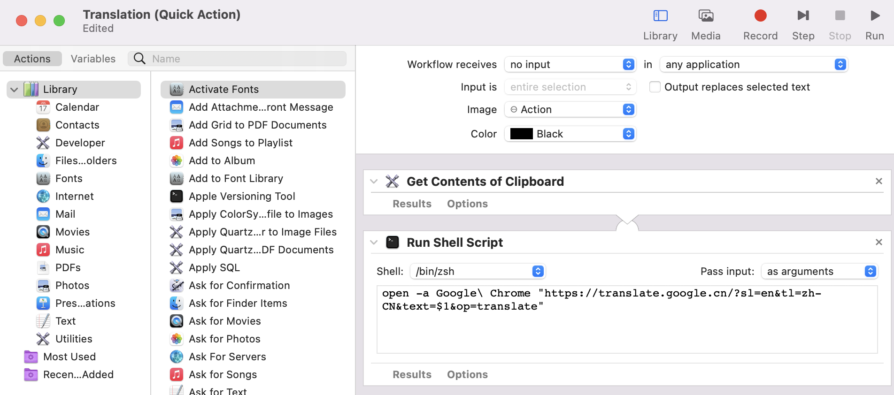

翻译能有多快？在 Mac 上实现一键翻译
因为平时需要阅读大量的英文资料，翻译对我来说是一个高频需求，但我一直没能找到一个足够趁手的工具。对于一个理想的翻译工具，我有三点期望：
- 翻译准确：翻译的结果与原文贴合不显得尴尬
- 触发简单：复制到剪贴板后快速触发翻译指令
- 响应迅速：发起翻译请求到获得结果小于一秒
1. 原始方案
如果翻译目标是一个单词，macOS 已经提供了比较完美的支持：
- 用触摸板选中目标单词
- 双指敲击触摸板唤起菜单
- 选择「Look up "xxx"」唤起系统内置的词典应用
美中不足的是，如果一个应用抛弃系统提供的选项菜单自立门户，比如「Notion」，我们就得另寻它路。
如果翻译目标是一个句子，我会选择在 Chrome 中新开一个标签页，然后使用「Google 翻译」网页版完成翻译过程，整个流程步骤如下：
- 用触摸板选中目标句子
- 使用「⌘+C」复制文本
- 使用「⌘+Tab」找到 Chrome (一般只需按一次)
- 使用「⌘+T」打开一个新的标签页
- 输入网址 (大约输入 1-2 个字母就可以自动补全)
- 将指针移至输入框并激活
- 输入文本并触发翻译动作
整个过程需要约 3-5 秒，运气不好时需要 6-8 秒。
2. DeepL
半年前，在和一位同事闲聊时，他提到 「DeepL Translator」的翻译准确度甚至超过了「Google 翻译」：
"Research on the two services has found that DeepL is more accurate than Google Translate in many cases — but, like many AI-powered tools, it may have a bias problem"
于是我立即下载「DeepL for Mac」开始体验。从翻译后的文本上看，DeepL 翻译和 Google 翻译的结果确有区别，前者在翻译的「信达雅」上确实要优于后者。但由于我日常翻阅的资料以自然科学、计算机等内容为主，二者在此场景下并没有很大的差别。不过，在体验的过程中，我有一个意外的发现：「DeepL for Mac」的交互设计几乎达到我想要的理想状态
- 用触摸板选中目标句子
- 连续两次按下「⌘+C」，复制文本的同时会唤起 「DeepL for Mac」并触发翻译动作
整个翻译链路从原来的 7 步精简至 2 步，而且将「复制文本」和「触发翻译」动作合并，有效降低理解、记忆和使用成本。但经过深度体验后，还是遗憾地发现 DeepL 的方案仍然存在瑕疵：尾部响应时间过长，每天都会遇到两三次响应时间超过 5s ，甚至更久的情况。
这个瑕疵的产生原因可能是网络速度慢，或者翻译任务在服务端排队、被限速等等，对此我并未继续深究。但当响应时延超过 5 秒、10 秒时，「瑕疵」就成为了「严重的问题」，响应时间的不稳定延长将让交互设计争取到的时间变得不值一提。
3. DeepL × Google
相对「DeepL for Mac」，「Google 翻译」的响应时间相当稳定，很少出现响应时间过长的现象。于是我们很自然地可以想到：是否可以将「DeepL for Mac」的交互与「Google 翻译」结合？
- 用触摸板选中目标句子
- 连续两次按下「⌘+C」，复制文本的同时在 Chrome 中打开「Google 翻译」网页版并自动触发翻译动作
经过简单的调研，我决定通过 macOS 自带的 Automator 和 Keyboard 工具来实现它。
建立「Quick Action」
打开 Automator 后，创建一个新的「Quick Action」：
- 因为要用快捷键触发，将工作流设定成不接收任何应用的输入
- 因为要从剪贴板获取待翻译文本，拖入「Get Contents of Clipboard」
- 因为需要在 Chrome 中打开「Google 翻译」，拖入「Run Shell Script」，并将剪贴板中的文本作为脚本的参数传入
- 编辑完毕后重命名为 Translation 保存即可 (这里的名字只需辨认方便即可)
整体配置如下：

Shell 脚本内容很简单，就是将剪贴板的文本作为参数传入 URL 中：
open -a Google\ Chrome "https://translate.google.cn/?sl=en&tl=zh-CN&text=$1&op=translate"
设定 keyboard shortcuts
顺着「System Preferences」→「Keyboard」→「Shortcuts」进入快捷键配置，并在「Services」菜单中，找到刚刚保存的「Translation」，点击设置快捷键。由于 macOS 不支持设置多次触发组合键，最后我选择了「⌘+^+C」的组合。尽管因为快捷键支持受限，尚未实现最完美的解决方案，但已经极大地优化了平时工作的翻译流程。最终效果可以参考我录制的一个 Demo。
💡 如果你从未使用过 Automator，可能需要在「System Preferences」→「Security & Privacy」→「Accessibility」中添加 Automator
利用类似方案，不难实现：
- Google 快速搜索：打开 Google 并以剪贴板中的内容作为关键词触发搜索
- Youtube 快速搜索：打开 Youtube 并以剪贴板中的内容作为关键词触发搜索
选择合适的工具
现在，在日常工作中，我会结合上述三种方案来满足翻译需求：
- 想要翻译的文本更长，期望结果更加流畅，使用 DeepL
- 想要翻译的文本较短，期望翻译速度更快，使用 DeepL × Google
- 只是查看单词的含义，使用系统自带的「Look up XXX」
后记
我一直记着工作后的第一位导师说的话，原话我已经记不太清，意思大致是：作为一名工程师，一旦发现自己在重复低效地做一件事情，就应该感到焦虑，并付诸行动去改善它。当然，还有一种方式可以系统性地改善这个问题，那就是让自己的英语变得更好，这也是我最近在努力的方向 : )。